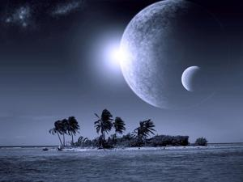

I recently fixed my binoculars and had a chance to test them out tonight. I scanned the skies, checked out blazing Venus, saw Jupiter’s moons, peered into the star nursery that is the Great Orion Nebula, and gazed in awe at the Seven Sisters – The Pleiades. I saw planets and moons, nebulae and star clusters, jewels of the sky. While these sites are beautiful, classic “go-to” objects for any amateur astronomer, sometimes my favorite things to see are the ‘mundane’ – the things we take for granted.
We look up in the evening and see countless stars. The stars are always there, they’re dependable. Even while looking at the highlights of the night, the stars are there. They make up the backdrop to these showcases. But we can’t forget that these stars are no less magnificent than the eye-pleasing nebulae, even though they may only be simple tiny points of light from our perspective. They are real places just the same and they hold secrets and mysteries just as intriguing.
Astronomers have found that at least half of all stars in the night sky have planets. Go outside and look up. Chances are you’re looking at a complete solar system; you’re looking at someone else’s Sun. While you may or may not be looking at another world with life, statistics show that there is at least the possibility. Just given the vastness of space, the abundance of livable places, the plethora of the chemical building-blocks of life and their innate desire to become ordered, and the sheer amount of time they’ve had to become complex and self-replicating, there has to be life out there – at least in my opinion. And like Jodie Foster’s character in Carl Sagan’s Cosmos said, “The universe is a pretty big place. If it’s just us, seems like an awful waste of space.”
I can’t even imagine what’s out there! Lifeforms beyond our comprehension. Bizarre places, planets of amazing beauty and wonder, to mind-numbingly bare doldrums. Whatever you could dream up, it probably exists out there somewhere, along with countless other things you could never even believe.
So, what I like to do is find the nebula or star cluster – the things we amateur astronomers love to show off to the unacquainted – and drift off to the right, just a little. There, hidden in the darkness are the long lost stars; the forgotten ones who aren’t in the spotlight, who hide just offstage living their life quietly in peace. See that dim red one there? No, not that one, the smaller one – the second star to the right. Yes, that one there. Whose life is being played out there? What wars are being fought? Are they world-wide conflicts of a superior species looking for global domination? Or is it just a tiny insect-like creature battling mono a mono simply for its daily rations of food?

Maybe the star is home to a planet of untold beauty. Maybe the planet is a global paradise inhabited solely by plant-like life, lining the pristine beaches and covering majestic mountaintops. The night skies might be graced with not one, but three glowing moons. Imagine the evenings of paradise... an entire world of Eden. Void of conscious beings, it quietly waits for someone to share its treasures with. For all intents and purposes, that planet exists. And why not around that particular star?
Tonight, I gaze towards that second star to the right and embark on my own adventure. That unimposing star who is all but forgotten. That proudly modest star that gives life to paradise beyond imagination. I become giddy with excitement and anticipation for what secrets the other humble stars hold. And they’re everywhere! There are countless quiet stars just waiting there, to the right, to help you conjure up your own dreams.
Try it! Go see for yourself... grab some binoculars, step outside and find the smallest star you can find and let your imagination do the rest. Don’t have binoculars? Doesn’t matter. Simply look up and you’ll see worlds among worlds you never knew existed – there, floating just over your head. Ok, it’s cloudy and you can’t see anything... then you can use pictures of these places. There is a never-ending supply of photographs of space posted all over the internet for free. Think of them as postcards of infinity.
I stumbled across this amazing image of the Pleiades by astrophotographer George Hatfield. Sure, the Pleiades star cluster is beautiful in its own right, but did you notice the other stars? There are tons of them! Just try and count them... You can’t even count the number of entire worlds captured in this picture of a tiny corner of the sky. If that doesn’t blow your mind, I don’t know what will.